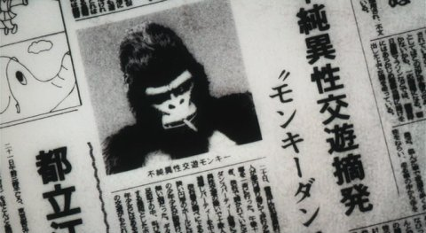
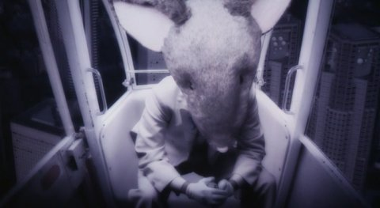
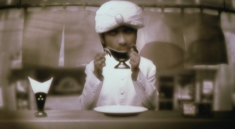

Dan Pink Drive című előadását illusztrálja egy szőrös férfikéz tíz percen keresztül. Extrém szemléletes és nagyon jó.
https://www.youtube.com/watch?v=u6XAPnuFjJc
Vélemény?
Dan Pink Drive című előadását illusztrálja egy szőrös férfikéz tíz percen keresztül. Extrém szemléletes és nagyon jó.
https://www.youtube.com/watch?v=u6XAPnuFjJc
Vélemény?
Ahogy legutóbb, most is egy sci-fi anime antológiáról írok egy rövid bemutatót.
Taku Mayumura története alapján Masao Maruyama producer keze alatt három, méltán híres rendezőt (Rintaro, Yoshiaki Kawajiri, Katsuhiro Ôtomo) szedtek össze, hogy Neo Tokyo címmel egy filmben vászonra vigyék a következő három nem mindennapi történetet.
Sajnos nem találtam meg az eredeti trailert, így nekem kellett összevadászni valamit a netről. A következőt sikerült:
https://www.youtube.com/watch?v=T9wLTSgfNOA
Rintaro – Labyrinth-Labyrintos
Rintaro rendezte a híres, 2001-es Metropolis című animét, ami ha jól emlékszem világsiker volt, de ha nem az sem érdekel, mert én nagyon szeretem. A rendező viszonylag nehéz feladatot kapott azzal, hogy egyfajta keretet kellett készítenie, ami összefogja az egész filmet.
Rögtön a film elején egy igazán furcsa világba kerülünk, ahol egy kislány, Sachi és a macskája, Cicerone fogócskáznak. Játék közben pedig egy ingaórán keresztül egy rémisztő és számukra mégis érdekes és mulatságos labirintusba jutnak, melynek végén egy cirkusz áll. Egy bohóc várja őket a bejáratnál, aki utat mutat nekik, így vezetve át a nézőt az anime következő rövidfilmjébe.


Labyrinth-Labyrintos
Yoshiaki Kawajiri – The Running Man
Valahol a jövőben az emberek egyik kedvenc sporteseménye egy gyilkos „autóverseny.” Egy ilyen versenyre látogat el a történet narrátoraként szereplő újságíró. Egy cikket ír az eddigi legsikeresebb versenyzőről, Zach Hugh-ról, aki már tíz éve versenyez és minden futamát túlélte. Az újságíró, hogy miképpen, azt nem lehet tudni, bejut Hugh-hoz, aki éppen elmélyülten koncentrál. Ekkor az újságíró rájön, hogy Zach Hugh valamiféle telekinetikus képességgel rendelkezik, ugyanis koncentrációja során maga körül mindent összezúz valamiféle láthatatlan erő.
A verseny során Hugh minden ellenfele és maga Hugh is saját erejének áldozata lesz. Egy elhasznált, kiégett embert mutat be ez a film: „A szíve, amely valaha másokat olyan erősen buzdított már saját magát sem buzdította, csak megszokásból dobogott, mert erre képes volt.”


The Running Man
Katsuhiro Ôtomo – Construction Cancellation Order
Azt hiszem Katsuhiro Ôtomo munkásságát nem kell ecsetelnem, mert ezt szerintem több korábbi bejegyzésemben is megtettem, szóval most ezt át is ugrom, és rátérek a lényegre.
Egy dél-amerikai köztársaság, Aloana újonnan választott kormánya felbont egy korábban kötött, hatalmas szerződést az államnak épülő, és jelenleg félkész állapotban levő 444-es komplexumról. A kivitelező vállalat sietve kiküldi a teljesen automatizált építkezésre Tsutomu Sugioka-t felügyelőnek, hogy azonnal állítsa le azt, és hogy derítse ki mi történhetett a korábbi felügyelővel, akit a cég nem tud elérni. Hősünk meg is érkezik a dzsungel mélyén levő 444-es építkezésre, ahol a 444-1-es számú robot fogadja, és vezeti körbe. Sajnos Sugioka-nak nem sikerül a robottal leállíttatni a munkálatokat, és helyzete egyre kilátástalanabbá válik. A gépek egyszerűen nem engedelmeskednek az új felügyelőnek, az építkezés pedig folyamatosan nyeli a pénzt.
Tsutomu Sugioka majdnem arra a sorsa jut, ami a korábbi vezetőé lehetett, bezárják. Végül elpusztítja a 444-1-es robotot, elindul, hogy elpusztítsa a gépeket összekötő központot, ezáltal leállítva az egész építkezést. Eztán érkezik egy új utasítás, mely szerint azonnal folytatni kell az építkezést, mivel a kivitelezőnek sikerült megegyezésre jutni az új kormánnyal. Tsutomu Sugioka erről az üzenetről már nem értesül. Tökéletes bemutatása ez ember és gép ellentétének és egyben egymásra utaltságának.


Construction Cancellation Order
Sajnálom, hogy ez a poszt ilyen rövidre sikeredett, de most, éjfél felé már elég fáradt vagyok. Végszó!
Ugyan az egész film csak ötven perc, de mindenképp megéri megnézni. Lélegzetelállító látvány, csodálatos mechanical design, magával ragadó képi világ és zene, végül, de nem utolsó sorban eredeti történet. Remélem ennél senkinek sem kell több. (Szívesen megnézném moziban.)
Pár hete már, hogy megnéztem Katsuhiro Ôtomo Memories című animéjét, ami három, egyenként kb. negyven perces rövid animéből áll. Katsuhiro Ôtomo művész, forgatókönyvíró, filmrendező, akit legtöbben az Akira című mangája, illetve egész estés animéje révén ismernek, nálam nagy kedvenc. Ha valamihez köze van, akkor az már olyan rossz nem lehet.
Valami igazán egyedit kerestem, lehetőleg sci-fi műfajban, így találtam rá a Memories-re. A három rövidfilmet, három, méltán híres japán rendező és készítette, valamint a zseniális Satoshi Kon is részt vett a munkálatokban, mint forgatókönyvíró. Lássuk miről is szól a három anime, ez a három kivételes és végzetes vízió.
https://www.youtube.com/watch?v=WgPS2wRhFxM
Kôji Morimoto – Magnetic Rose
Ez egy hátborzongató sci-fi történet, ami a jövőben, egy űrszemét-szedő teherhajó legénységéről és halálos kalandjukról szól. A jól összeszokott csapat egy rutinmunkát követően egy elhagyatott űrállomásról SOS jeleket fog. Habár nem nagyon szeretnék, nincs más választásuk, mint megvizsgálni a dolgot, ezért két űrhajósukat leküldik az űrállomásra. Először azt hiszik, hogy űrkalózokat fognak az elhagyott állomáson találni, azonban ennél nem is tévedhettek volna nagyobbat. Az állomás régen egy világhíres operaénekesnőé volt. Halála után az állomás mesterséges intelligenciája vette át az irányítást, és próbálta életre kelteni a díva emlékeit. Ennek esik áldozatul a két űrhajós és végül a teherhajó legénysége is, mikor az AI teljes őrületbe csap át.
Monumentális és megrázó. Zene: Yoko Kanno, kiváló.

Magnetic Rose
Tensai Okamura – Stink Bomb
Ez a történet sokkal viccesebb, de nem kevésbé tragikus, mint az előző. Tanaka Nobuo sokakkal egyetemben erős megfázással küzd. Hiába kap oltást az orvosától, nem segít rajta. Nobuo egy gyógyszergyártó cégnél dolgozik, és az egyik munkatársa tanácsolja neki, hogy próbálja ki a főnökük asztalán levő egyik új megfázás elleni gyógyszerüket. Nobuo megfogadja a tanácsát, azonban egy másik pirulát kap be a jó helyett. Mivel még mindig nagyon rosszul van, úgy dönt, hogy átmegy a pihenőszobába és szundít egy rövidet, azonban másnap reggelig húzza a lóbőrt, és mikor felébred az intézetben mindenkit eszméletlenül, a földön heverve talál.
Azonnal kiderül, hogy a gyógyszercég nem csak ártatlan influenza és megfázás elleni készítményekkel foglalkozott, hanem a katonaságnak is folytatott kutatásokat. A cég igazgatója azonnal Tokióba rendeli Nobuo-t, hogy vigye el neki az összes titkos iratot. Ekkor kezdődik az igazi kaland, mert előző nap Nobuo pont azt a titkos kutatás eredményeképpen elkészült pirulát kapta be, ami egyszemélyes biológiai fegyverré változtatta őt, miközben erről ő mit sem tud.

Stink Bomb
Katsuhiro Ôtomo – Cannon Fodder
A három közül, az utolsó film az, amelyik lelkileg a legdurvább hatást váltja ki. Az animáció nagyon kedves és aranyos, de szinte azonnal rájön az ember, hogy nincs minden rendben a világgal. Pár perc után Orwell 1984-e jutott az eszembe, és ez az anime tényleg olyan: félelmetesen nyomasztó, undorító és iszonyatos világot tár a szemünk elé. Egy hatalmas gépesített városban járunk, ahol az élet nap, mint nap ugyanabban a mederben folyik. Minden nap percre pontosan ismétlődnek a teendők. Egy olyan város ez, amely szó szerint tele van ágyúkkal, és egy másik távoli, ismeretlen ellenségre lőnek minden nap. Egy család egy napjába csöppenünk, ahol jól látszik, hogyan vannak rettegés és kontroll alatt tartva az emberek. Az apa az egyik fő lövegnél szolgál, mint ágyútöltő, az anya gránátokat gyárt egy futószalag mellett, míg gyermekük, akit láthatóan lelkesít a háború, egész nap a hadviselésről szóló előadásokat hallgatja.
Az a legdurvább ebben az egészben, hogy ha ezt egy gyerek nézné meg, akkor nála hasonló hatást válthatna ki, mint a filmbéli gyereknél. Borzasztó eszközök ezek, melyet Katsuhiro Ôtomo-nak így sikerült igazán hatásosan bemutatnia.

Cannon Fodder
Annak ellenére, hogy mindhárom alkotás nyomasztó, azért akad benne bőven rejtett humor. Mindenek előtt pedig filmről-filmre eltérő és kontrasztos hangulattal találjuk magunkat szembe, gyönyörű.
Négy napos nyaralásból tértem vissza az este, rendesen elfáradtam, és pokolian kellett. Most, hogy visszajöttem Rednek se kell majd minden nap postolnia, ha nem akar. A mai bejegyzésem címe pedig nem a nyaralásomról szól, semmi ilyesmi. Mint legutóbb, most is egy filmről lesz szó, amit még hétfőn láttam.

A címe ugyanaz, mint fönt. 2006-ban készült, és nagy kedvencem, Mamoru Oshii rendezte. Mint a filmcímből némileg kiderül valami gyorskajáról lesz szó. Egészen pontosan stand-and-eat boltosok és a velük folyton hadakozó freeloaderek, vagy magyarul potyázók évtizedes küzdelmét mutatja be. A második világháború utáni Japánban kezdődik a történet, a háborútól megtépázott országban a hazatérőknek újra kell kezdeniük mindent. Így találkozunk az első gyorskajáldás buckwheat noodles-t áruló arccal, akihez Moongaze Ginji tér be épp zárás előtt. Ginji pszichológiai hadviseléssel éri el, hogy evés után fizetés nélkül távozzon, valamint a boltost lelkileg meg is töri. Ő a történelem egyik nagy freeloadere (egyszerűen nem találok most rendes magyar szót).

Jönnek mások; egy gyönyörű nő, egy lúzer aki úgy tarhál, majd olyan emberek akik egész üzletláncot tettek tönkre. A szereplők cserélődésével halad a történelem is, mindig van egy kis keret az új freeloadereknek. A kidolgozott háttérrel lesz az egész kerek. Az idővel pedig nem csak az emberek, a történelem, hanem az ételek is változnak, a gyorstésztától a hot dog-on át, a hamburgerig van minden. Változás: változik a kor, az emberek és a taktikák is, hogyan lehet kijátszani a modern kori gyorskonyhát. Mindig van és lesz olyan zseni, akinek ez sok év munkájának tökéletesítésével sikerül majd. Ingyen enni, és a potyázás legfőbb tudománya!

Amit igazán akartam le is írtam, még annyit, hogy… A film superliveanimation-ben készült, ami annyit tesz, hogy az alkotók egy rakat felvételt és fényképet készítettek, melyeket digitálisan alakítgattak jobbra-balra. Végül pedig egy olyan animáció jött össze, mintha kartonpapírra ragasztott szereplőket nézne az ember a vásznon. Iszonyat sok munka. Halál komoly vígjátéknak mondanám a filmet. Ezért megéri még a sötét fájlcserélők legmélyebb bugyraiban is kutatni.

Reddel mindketten rendesen el vagyunk havazva, de amikor csak tudunk, dolgozunk az új themén. A mindennapi dolgok és a hétvégi programok miatt leghamarabb is csak jövő hét vége fele leszünk kész.
Most rohannom kell, de még beteszek ide egy fantasztikus animációt. (Köszönet Daninak.)